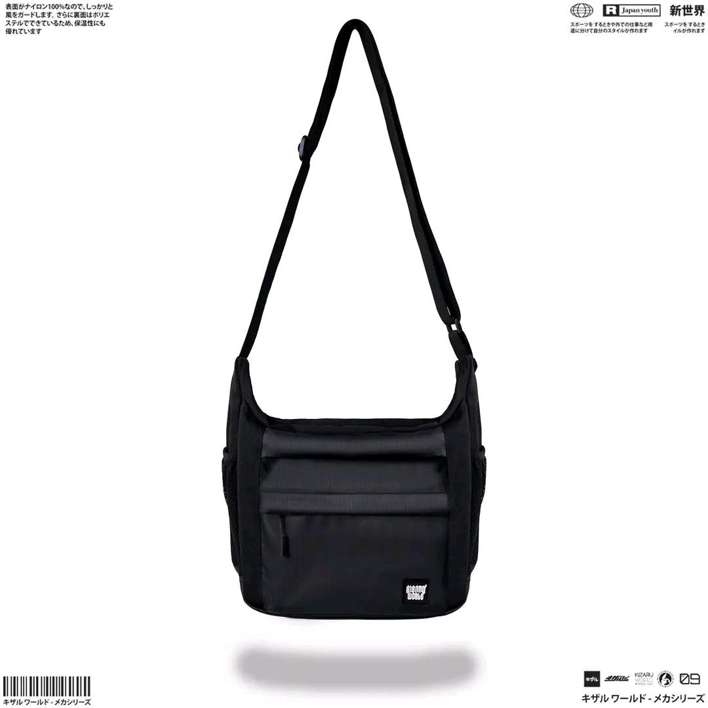
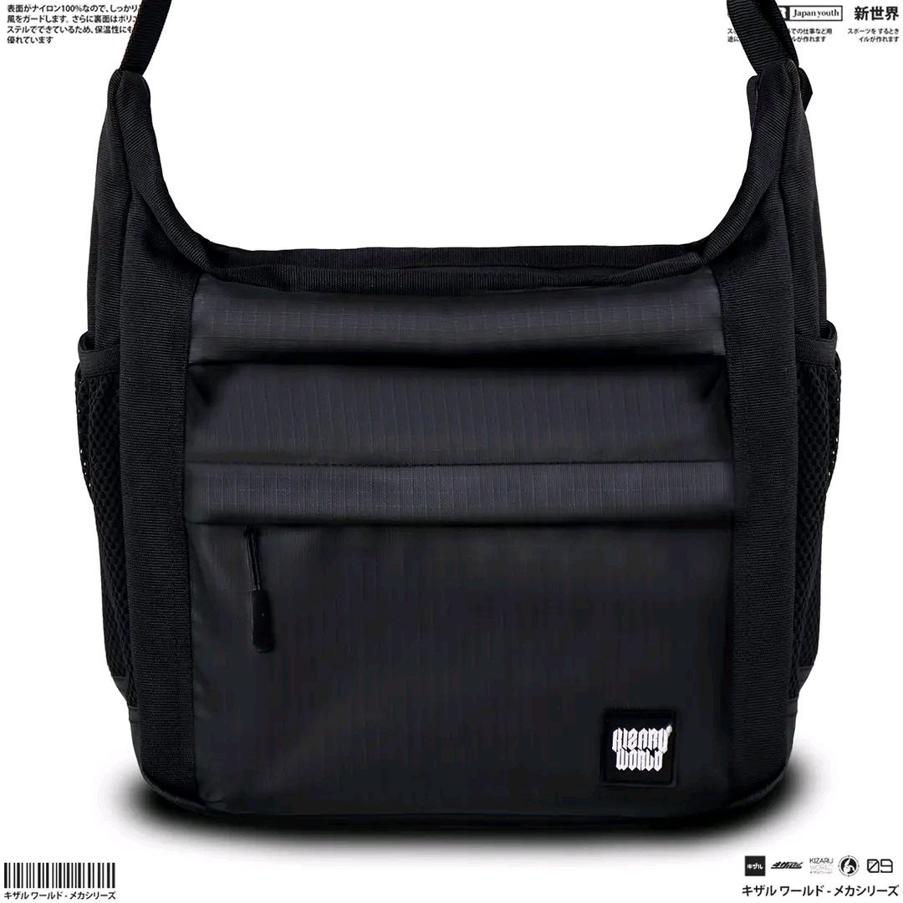
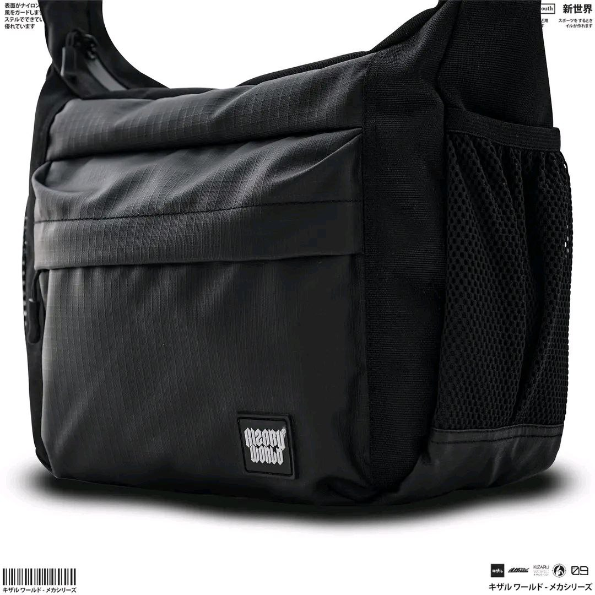
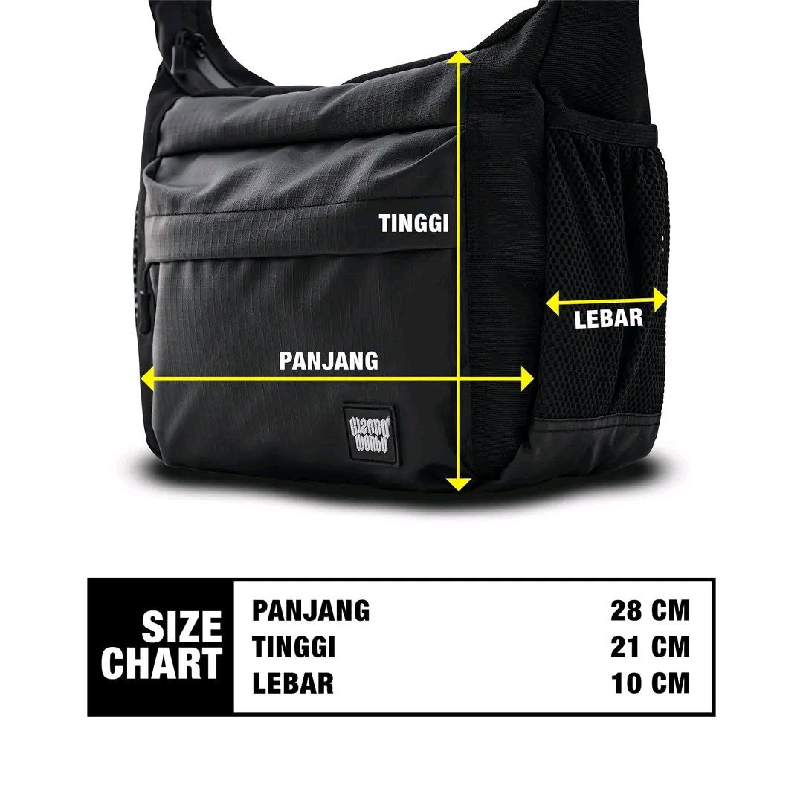

KIZARU Pouch Bag V2
Rp79.000
KIZARU Pouch Bag V2
Statement piece dari Kizaru ini unisex jadi kamu bisa bebas bereksperimen dengan diri kamu tanpa ragu lagi.
KIZARU Sling Bag SATOSHI hadir dengan kualitas terbaik, mau simpel atau artistik, mana yang bikin kamu tertarik?
[DETAILS]
Dimension: 21 x 28 x 10 cm
Capacity: 6 Liter
Polyester 1000D Fabric
Polyester 1000D Ripstop Waterproof
Polyester 210D Polyester water-repellent
Mil-Spec Poly Acetal Buckles
Mil-Spec Polyester Webbing
Plastic Pullers
Warna: Black
Packaging: Zip Plastic Bag.
Operasional Kerja:
Senin Jumat: 09.00-18.00 WIB
Sabtu Minggu: 13.00-20.00 WIB
* Customer service fast respon, silahkan chat apabila ada yang perlu ditanyakan.
Kizaru World salah kirim size, cacat, atau kurang? Bisa retur dengan ketentuan:
* Sertakan bukti video unboxing.
* Maksimal konfirmasi retur 1 x 24 jam setelah produk diterima.
* Hanya berlaku untuk tukar ukuran & produk cacat produksi (rusak, berlubang, dan robek).
* Ketersediaan produk pengganti tergantung stock yang tersedia.
* Wajib memberi penilaian terbaik sebelum pengajuar, proses retur.
Bila ada kendala pesanan silahkan hubungi admin terlebih dahulu sebelum memberikan penilaian. Komitmen kami adalah 100% kepuasan konsumen.
Sincerely,
Kizaru World Official Store
Pilih Ukuran Dibawah untuk Membeli